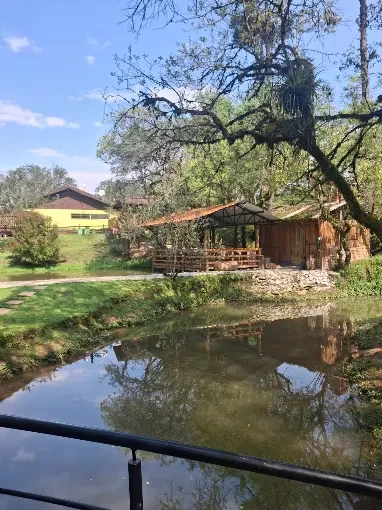
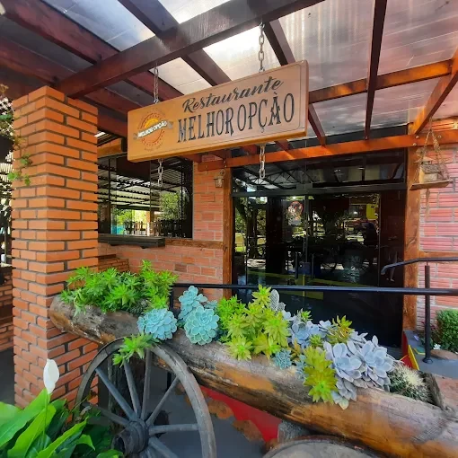
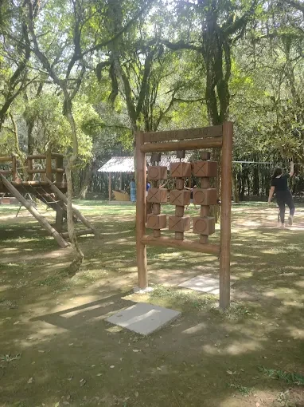
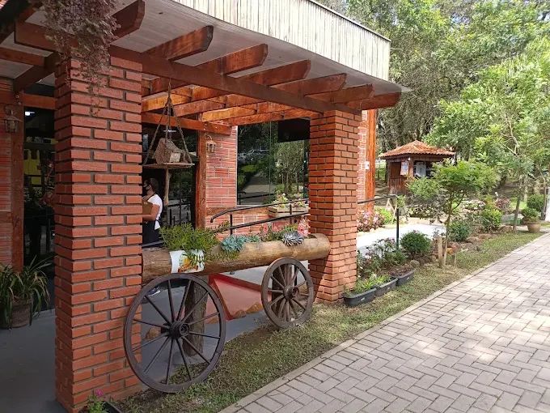
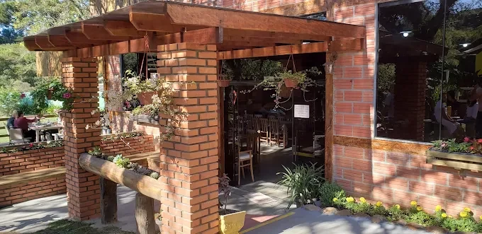
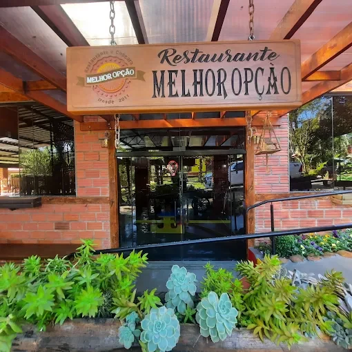

Muito mais
que um
restaurante.
Gastronomia, natureza e momentos especiais em um só lugar. Venha viver o Melhor Opção.


2011
✦

Sabores
Pratos, petiscos e bons encontros à mesa.

Natureza
Jardins, lago e o prazer de ficar sem pressa.

Chalé
Um convite para prolongar a experiência.

Momentos
Família, amigos e memórias para guardar.
Venha para almoçar.
Fique pelo lugar.
No Melhor Opção, a mesa é só o começo. Entre árvores, caminhos, jardins e espaços para reunir quem você gosta, cada visita pode virar um passeio.
A arquitetura rústica, a paisagem e a tranquilidade de Bateias dão o tom de uma experiência para viver com calma.


Mais que um nome.
Um lugar para voltar.
Role, descubra os sabores, passeie pelos jardins e encontre o seu próximo momento especial.
O sabor de estar
junto.
Uma mesa generosa, bons acompanhamentos e tempo para conversar. Aqui, cada encontro merece ser saboreado.
Sabores para compartilhar.
Fotografias reais do local. Consulte o cardápio e a disponibilidade dos pratos diretamente com o restaurante.
A natureza também faz parte do cardápio.
Caminhos verdes, água corrente, jardins e cantinhos especiais. O Melhor Opção é um convite para aproveitar o dia além da mesa.


Gostou tanto que quer ficar mais?
O Chalé das Araucárias oferece a possibilidade de transformar o passeio em uma estadia cercada de natureza, tranquilidade e aconchego.
Conheça os detalhes, disponibilidade e condições diretamente no anúncio oficial.
Conhecer o chalé no Airbnb ↗Cada canto, uma descoberta.





Venha viver o Melhor Opção.
Restaurante e Chácara Melhor Opção
Bateias, Campo Largo — Paraná.
Antes de sair, consulte os horários de atendimento nas redes oficiais.
Tem lugares que você visita.
Outros, você vive.
Reúna quem você gosta. Escolha o dia. O resto é aproveitar.
Conversar pelo WhatsApp ↗